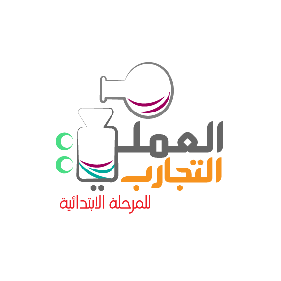

الصف الأول الابتدائي
الصف الثاني الابتدائي
الصف الثالث الابتدائي
الصف الرابع الابتدائي
الصف الخامس الابتدائي
الصف السادس الابتدائي
المرحلة المتوسطة
المرحلة الثانوية
الصف الثالث متوسط
الصف الأول ثانوي
الصف الثاني ثانوي
الصف ثالث ثانوي كيمياء وفيزياء وأحياء